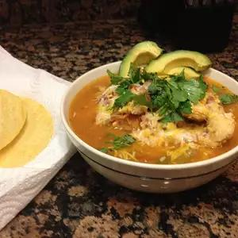

Homemade Chicken Tortilla-Soup

Bring a bit of the Southwest to your table
with this homemade chicken tortilla soup.
Loaded with tender chicken, diced tomatoes,
and plenty of seasonings, it's sure to be
requested again and again. Serve with tortilla
chips if desired.
Ingredients
- 1 cup chopped onion
- 3 cups chicken broth
- 1 (14.5 ounce) can diced
tomatoes with green chile
peppers
- 1 envelope taco seasoning
- 2 (14.5 ounce) cans chicken broth
- 1 1⁄2 pounds skinless, boneless
chicken breast meat - cubed
- 2 tablespoons cornstarch
- 1⁄4 cup cold water
- 1⁄4 cup shredded Mexican cheese
blend
- 1 tablespoon chopped fresh
cilantro (Optional)
Directions
- Combine onion, chicken broth, tomatoes, and taco seasoning in a large sauce pan; bring to a boil over medium heat.
-
Stir in chicken; reduce heat to low, cover, and simmer until chicken is nolonger pink, 4 to 6 minutes.
-
Mix cornstarch and water in a smallbowl until smooth; gradually stir into soup.
-
Bring soup to a boil over medium-high heat; cook, stirringoccasionally, until thickened, about 1 minute.
Top with Mexican cheese and cilantro.